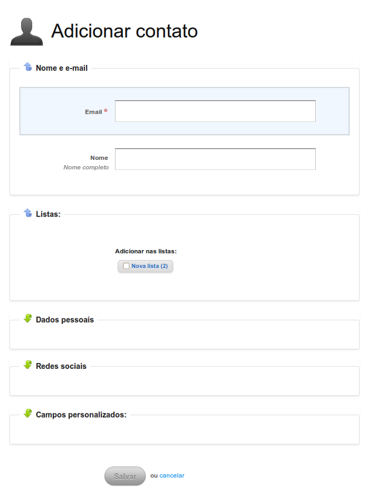
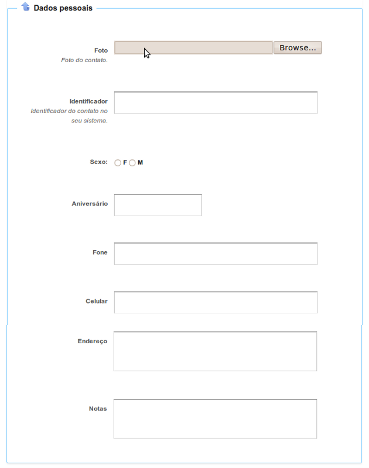
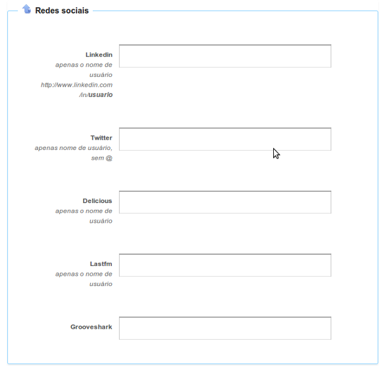
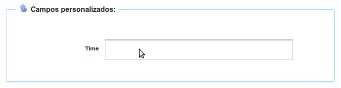

1 Cadastro
Vá em Contatos e clique no link à direita Adicionar. Abrirá o seguinte formulário:

O único campo obrigatório é o email, que é o identificador do contato.
Nesta tela inicial, você pode também preencher o nome e informar em quais listas o contato se inscreveu.
1.1 Dados pessoais
Você pode clicar na caixa Dados pessoais para abrir mais campos:

- Foto
- Identificador
- Se o contato possui um identificador em outro sistema que você usa, utilize este campo para isto. Ao usar as bibliotecas de integração do Mailee.me, este campo será utilizado.
- Sexo
- Define o gênero do contato. Poderá ser usado na segmentação.
- Aniversário
- Abre um campo com um calendário para definir a data de nascimento do contato. Poderá ser usado na segmentação.
- Fone
- Permite armazenar o telefone pessoal ou comercial do contato.
- Celular
- Permite armazenar o celular pessoal ou comercial do contato.
- Endereço
- Permite armazenar o endereço pessoal, comercial ou de cobrança do contato. O campo é aberto para qualquer formato.
- Notas
- Campo aberto.
1.2 Redes sociais
Você pode clicar na caixa Redes sociais para abrir mais campos:

- LinkedIn
- Coloque aqui o nome do usuário ou o caminho completo do usuário no LinkedIn. O LinkedIn é uma rede social de negócios muito útil para relações de trabalho. O Mailee.me é capaz de saber o número de conexões, recomendações (estes dois campos poderão ser utilizados na segmentação.), informações da indústria, trabalho, experiência, interesses, grupos e o sumário do seu contato no LinkedIn. Se você não informar o nome do seu contato, ele utilizará a informação desta rede social.
- Twitter
- Coloque aqui o nome do usuário no Twitter. O Mailee.me é capaz de saber o número de seguidores e também busca o ranking do contato no Klout. Estes campos poderão ser utilizados na segmentação.
- Delicious
- Coloque aqui o nome do usuário no Delicious. O Delicious é um serviço de bookmarks organizado por tags. O Mailee.me é capaz de buscar todas as tags neste serviço e também a ocorrência de cada uma. Estas tags poderão ser utilizadas na segmentação.
- Last.fm
- Coloque aqui o nome do usuário no Last.fm. O Last.fm é uma rede social para compartilhar informações sobre música e ouvir música. O Mailee.me é capaz de buscar todas as tags neste serviço e também a ocorrência de cada uma. Estas tags poderão ser utilizadas na segmentação.
- Grooveshark
- Coloque aqui o nome do usuário no Grooveshark. O Grooveshark é uma sistema online para ouvir música.
1.3 Campos personalizados
Você pode clicar na caixa Campos personalizados para abrir mais campos:

Mais informações sobre estes campos aqui.